6.2 Basic Filtering Types and Digital Filter Realizations
Digital Signal Processing
Imron Rosyadi
Learning Objectives
By the end of this lesson, you should be able to:
- Distinguish between lowpass, highpass, bandpass, and bandstop digital filters based on their frequency responses and typical ECE applications.
- Use MATLAB
freqz()to obtain magnitude and phase responses from a given transfer function \(H(z)\). - Explain and sketch Direct‑Form I and Direct‑Form II realizations of IIR filters from their difference equations.
- Describe cascade and parallel realizations and why we use first‑/second‑order sections.
- Interpret and design simple filters for speech preemphasis, speech bandpass filtering, and ECG enhancement with notch filtering.
6.5 Basic Types of Filtering – Intuition
Filters answer one big question: > Which frequency components do we want to keep, and which do we want to suppress?
Four basic types:
- Lowpass – keep low frequencies, remove high frequencies.
- Highpass – keep high frequencies, remove low frequencies.
- Bandpass – keep a band of middle frequencies.
- Bandstop / Notch – remove a band of frequencies, keep the rest.
Real‑world ECE analogy:
- Lowpass: Anti‑alias filter before ADC in a sensor interface.
- Highpass: AC‑coupling in audio to remove DC offsets.
- Bandpass: Channel selection in a communication receiver.
- Bandstop / Notch: Removing 50/60 Hz hum in bio‑signals (ECG, EEG).
Idealized Magnitude Response Concepts
Key regions of a filter’s magnitude response:
- Passband: frequency range where \(|H(e^{j\Omega})| \approx 1\).
- Stopband: frequency range where \(|H(e^{j\Omega})|\) is very small (strong attenuation).
- Transition band: frequency range between passband and stopband where the response “rolls off”.
Design parameters:
- \(\Omega_p\): passband edge frequency.
- \(\Omega_s\): stopband edge frequency.
- \(\delta_p\): maximum allowed passband ripple.
- \(\delta_s\): maximum allowed stopband ripple (or minimum attenuation).
Tip
In design specifications, you often see something like:
- Passband ripple \(\le 1\) dB (\(\delta_p\))
- Stopband attenuation \(\ge 40\) dB (\(\delta_s\))
- \(\Omega_p = 0.4\pi\), \(\Omega_s = 0.5\pi\) (normalized radians/sample)
Lowpass Filter – Magnitude Response
Normalized Lowpass Filter
- Passes low frequencies: \(0 \le \Omega \le \Omega_p\).
- Attenuates high frequencies: \(\Omega \ge \Omega_s\).
- Has a transition band between \(\Omega_p\) and \(\Omega_s\).
- Passband ripple \(\delta_p\), stopband ripple \(\delta_s\).
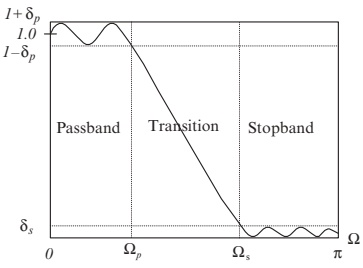
Typical ECE uses:
- Anti‑aliasing in sensor front‑ends (analog + digital).
- Smoothing / noise reduction in data (e.g., temperature, acceleration).
- Audio low‑frequency emphasis (bass boost as part of a more complex chain).
Key design trade‑offs:
- Steeper transition band requires higher order filters.
- Tighter stopband attenuation also increases order.
Highpass Filter – Magnitude Response
Normalized Highpass Filter
- Passes high frequencies.
- Attenuates low frequencies.
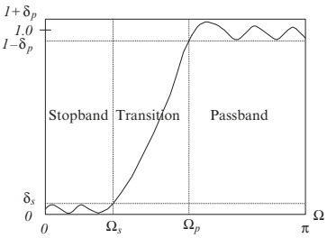
Typical ECE uses:
- Remove slow drift / DC offset from sensor signals.
- e.g., accelerometers measuring vibration but not constant gravity.
- In speech: emphasize high‑frequency content (e.g., preemphasis).
- Communication receivers: sometimes used after down‑conversion to remove image or DC component.
Note: A preemphasis filter in speech (later) is essentially a highpass filter.
Bandpass Filter – Magnitude Response
Normalized Bandpass Filter
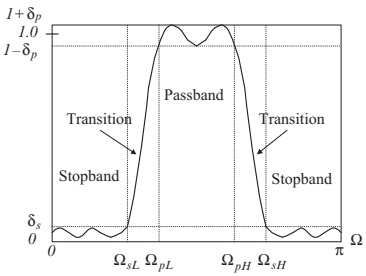
- Passes a frequency band: \(\Omega_{pL} \le \Omega \le \Omega_{pH}\).
- Attenuates frequencies below \(\Omega_{sL}\) and above \(\Omega_{sH}\).
- Two transition bands: low side and high side.
Parameters:
- \(\Omega_{pL}\), \(\Omega_{pH}\): lower/upper passband edges.
- \(\Omega_{sL}\), \(\Omega_{sH}\): lower/upper stopband edges.
- \(\delta_p\), \(\delta_s\): ripple tolerances.
Typical ECE uses:
- Channel selection in RF or IF stages.
- Formant extraction and band‑limited features in speech.
- Audio equalizer bands (e.g., “midrange” band).
- Vibration analysis: isolating mechanical resonance bands.
Bandstop / Notch Filter – Magnitude Response
Normalized Bandstop Filter
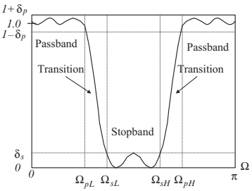
- Rejects a band of middle frequencies.
- Passes low and high frequencies.
Special case:
- Notch filter = very narrow bandstop filter.
Typical ECE uses:
- Power‑line interference removal at 50/60 Hz in ECG, EEG, EMG.
- Removal of a known interference tone in communication systems.
- Audio hum removal.
Design challenge:
- Very narrow notch ⇒ high Q ⇒ sensitive to coefficient quantization.
- Implementation choice (structure) matters for numerical stability.
From Transfer Function to Frequency Response
To analyze a digital filter, we often start from its transfer function:
\[ H(z) = \frac{B(z)}{A(z)} = \frac{b_0 + b_1 z^{-1} + \dots + b_M z^{-M}}{1 + a_1 z^{-1} + \dots + a_N z^{-N}}. \]
We want:
- Magnitude response: \(|H(e^{j\Omega})|\).
- Phase response: \(\angle H(e^{j\Omega})\).
MATLAB tool: freqz()
B– vector of numerator coefficients \([b_0 \; b_1 \; \dots \; b_M]\).A– vector of denominator coefficients \([1 \; a_1 \; \dots \; a_N]\).N– number of frequency samples between \(0\) and \(\pi\).h– complex frequency response at eachw.w– corresponding frequency samples in radians/sample.
Example 6.12 – Transfer Functions and Filter Types
Given transfer functions:
\(H(z) = \dfrac{z}{z - 0.5}\)
\(H(z) = 1 - 0.5 z^{-1}\)
\(H(z) = \dfrac{0.5 z^2 - 0.32}{z^2 - 0.5 z + 0.25}\)
\(H(z) = \dfrac{1 - 0.9 z^{-1} + 0.81 z^{-2}}{1 - 0.6 z^{-1} + 0.36 z^{-2}}\)
Tasks:
- Plot poles and zeros.
- Use
freqz()to plot magnitude and phase. - Identify filter type (lowpass, highpass, bandpass, bandstop).
Example 6.12 – Standard (Delay) Form for MATLAB
Before using freqz(), rewrite in standard delay form (negative powers of \(z\)):
From the original forms:
- \[
H(z) = \frac{z}{z - 0.5} = \frac{1}{1 - 0.5 z^{-1}}
\] ⇒
B = [1],A = [1 -0.5].
- \[
H(z) = \frac{z}{z - 0.5} = \frac{1}{1 - 0.5 z^{-1}}
\] ⇒
- was already in delay form.
\[ H(z) = 1 - 0.5 z^{-1} \]
- \[
H(z) = \frac{0.5 z^2 - 0.32}{z^2 - 0.5 z + 0.25}
= \frac{0.5 - 0.32 z^{-2}}{1 - 0.5 z^{-1} + 0.25 z^{-2}}
\] ⇒
B = [0.5 0 -0.32],A = [1 -0.5 0.25].
- \[
H(z) = \frac{0.5 z^2 - 0.32}{z^2 - 0.5 z + 0.25}
= \frac{0.5 - 0.32 z^{-2}}{1 - 0.5 z^{-1} + 0.25 z^{-2}}
\] ⇒
- was already in delay form.
\[ H(z) = \dfrac{1 - 0.9 z^{-1} + 0.81 z^{-2}}{1 - 0.6 z^{-1} + 0.36 z^{-2}} \]
Pole–zero plots are shown in Fig. 6.20:
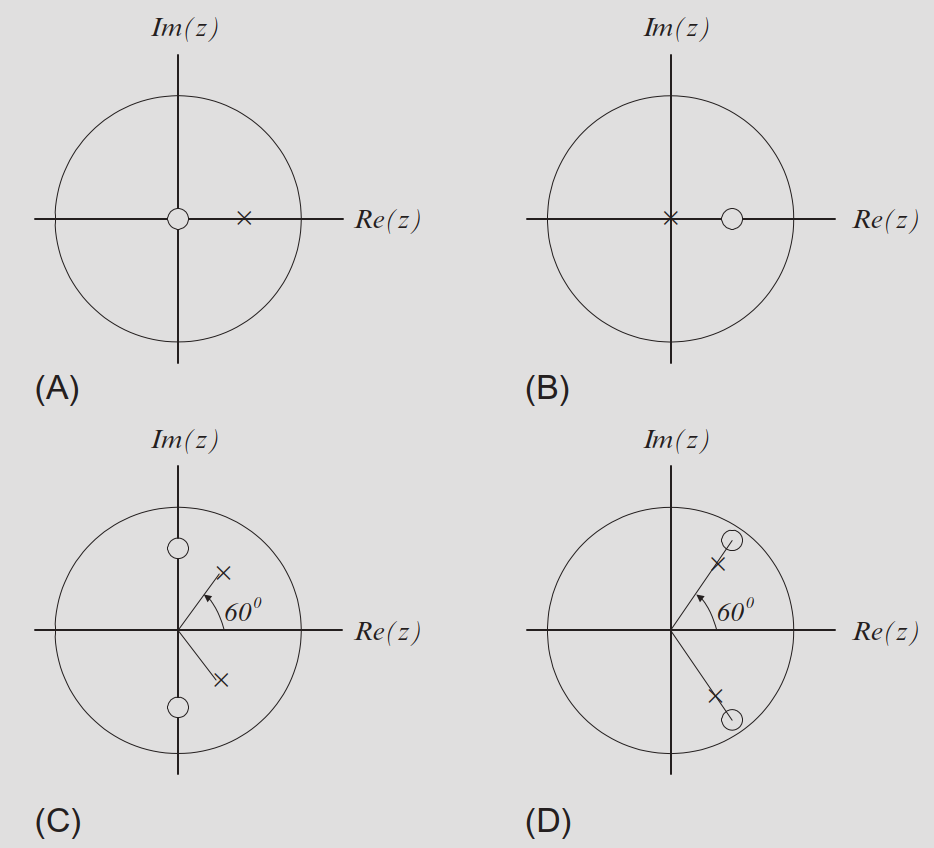
Example 6.12 – MATLAB Code Structure
The textbook Program 6.2 (cleaned up and corrected) looks like:
% Example 6.12
N = 1024;
% Case (a)
B = [1];
A = [1 -0.5];
[h, w] = freqz(B, A, N);
phi = 180*unwrap(angle(h))/pi;
figure(1);
subplot(2,1,1); plot(w, abs(h)); grid;
xlabel('Frequency (rad/sample)'); ylabel('Magnitude');
title('Case (a)');
subplot(2,1,2); plot(w, phi); grid;
xlabel('Frequency (rad/sample)'); ylabel('Phase (degrees)');
% Case (b)
B = [1 -0.5];
A = [1];
[h, w] = freqz(B, A, N);
% ... (similar plotting)Magnitude + phase plots for each case are shown in Figs. 6.21(a–d).
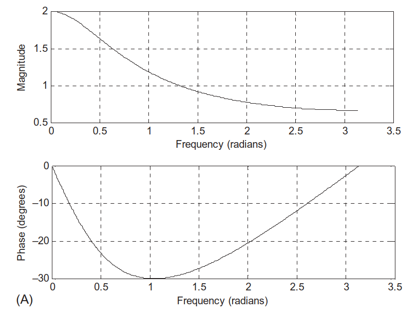
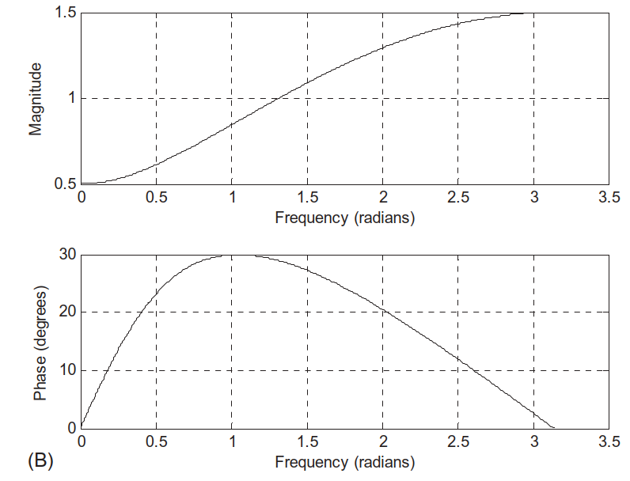
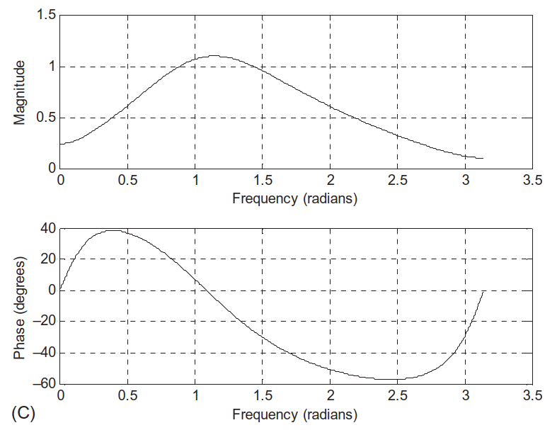
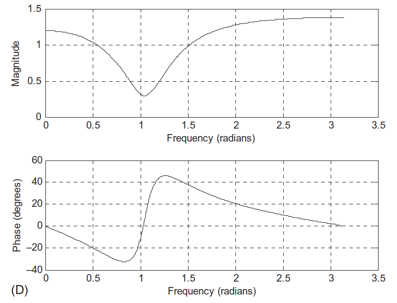
Example 6.12 – Identifying Filter Types
From the magnitude responses (Figs. 6.21(a–d)):
- \(H(z) = \dfrac{1}{1 - 0.5 z^{-1}}\)
- Magnitude is largest at low frequencies, decreases at high frequencies.
- ⇒ Lowpass filter.
- \(H(z) = 1 - 0.5 z^{-1}\)
- Zero at \(z = 0.5\) (near DC), magnitude small at low frequencies, larger at high frequencies.
- ⇒ Highpass filter (simple FIR).
- \(H(z) = \dfrac{0.5 - 0.32 z^{-2}}{1 - 0.5 z^{-1} + 0.25 z^{-2}}\)
- Band of frequencies where magnitude is significant, low elsewhere.
- ⇒ Bandpass filter.
- \(H(z) = \dfrac{1 - 0.9 z^{-1} + 0.81 z^{-2}}{1 - 0.6 z^{-1} + 0.36 z^{-2}}\)
- Narrow band of frequencies attenuated strongly, rest passed.
- ⇒ Bandstop (bandreject) filter.
Important
Being able to look at a magnitude response and classify the filter type is core. Practice mentally: - Does it pass low, high, a band, or “everything except a band”?
6.6 Realization of Digital Filters – Big Picture
Given a transfer function
\[ H(z) = \frac{B(z)}{A(z)} = \frac{b_0 + b_1 z^{-1} + \dots + b_M z^{-M}}{1 + a_1 z^{-1} + \dots + a_N z^{-N}}, \]
we can implement it in several equivalent ways:
- Direct‑Form I
- Direct‑Form II
- Cascade (Series) of first/second‑order sections
- Parallel sum of first/second‑order sections
All realize the same \(H(z)\) (ideally), but differ in:
- Memory (delay elements) required.
- Numerical behavior (sensitivity to coefficient quantization, overflow).
- Hardware mapping (e.g., how many multipliers/adders).
Direct‑Form I – From Difference Equation
Start from difference equation (time domain):
\[ \begin{aligned} y(n) &= b_0 x(n) + b_1 x(n-1) + \dots + b_M x(n-M) \\ &\quad - a_1 y(n-1) - a_2 y(n-2) - \dots - a_N y(n-N). \end{aligned} \]
Interpretation:
- Feedforward (FIR) part: weighted delayed inputs.
- Feedback (IIR) part: weighted delayed outputs.
Direct‑Form I structure implements these two parts in parallel, then sums them.
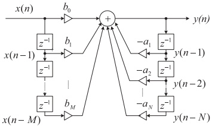
Second‑order example (M = N = 2):
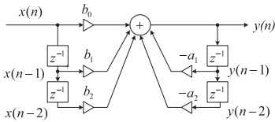
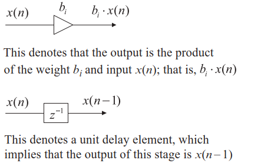
Direct‑Form II – Reduced Memory
Starting from
\[ Y(z) = H(z) X(z) = \frac{B(z)}{A(z)} X(z), \]
with \(M = N\), rearrange:
\[ Y(z) = B(z) \left( \frac{X(z)}{A(z)} \right). \]
Define an intermediate signal:
\[ W(z) = \frac{X(z)}{1 + a_1 z^{-1} + \dots + a_M z^{-M}}. \]
Then
\[ Y(z) = (b_0 + b_1 z^{-1} + \dots + b_M z^{-M}) W(z). \]
Corresponding difference equations:
Internal state update: \[ w(n) = x(n) - a_1 w(n-1) - \dots - a_M w(n-M) \]
Output equation: \[ y(n) = b_0 w(n) + b_1 w(n-1) + \dots + b_M w(n-M) \]
Structure:
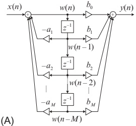
Second‑order example:
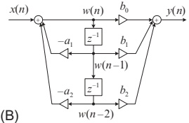
Note
Direct‑Form II uses fewer delay elements than Direct‑Form I (roughly half when \(M = N\)), which can save memory and hardware.
Direct‑Form I vs Direct‑Form II – Implementation Trade‑offs
- Number of multiplications: same (same number of \(a_j\) and \(b_i\)).
- Delay elements:
- Direct‑Form I: two separate delay lines (input and output).
- Direct‑Form II: one shared delay chain (internal state).
- ⇒ Direct‑Form II uses fewer delays, saves memory.
- Accumulation & scaling (fixed‑point):
- Direct‑Form II separates numerator and denominator accumulators.
- Allows separate scaling to avoid overflow.
- High‑order filters:
- Better to implement as cascade of second‑order Direct‑Form II sections (biquads).
Cascade (Series) Realization – Concept
Factor \(H(z)\) into first‑ and second‑order sections:
\[ H(z) = H_1(z) H_2(z) \cdots H_K(z). \]
Each section \(H_k(z)\) is usually:
- First order: \[ H_k(z) = \frac{b_{k0} + b_{k1} z^{-1}}{1 + a_{k1} z^{-1}} \]
- Or second order: \[ H_k(z) = \frac{b_{k0} + b_{k1} z^{-1} + b_{k2} z^{-2}}{1 + a_{k1} z^{-1} + a_{k2} z^{-2}} \]
Block diagram:
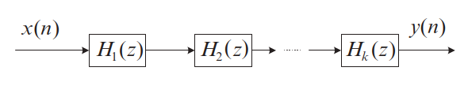
Tip
In practice, high‑order IIR filters are almost always implemented as a cascade of biquads (second‑order sections), each realized by Direct‑Form II (or other numerically robust forms like lattices).
Parallel Realization – Concept
Express \(H(z)\) as a sum of sections:
\[ H(z) = H_1(z) + H_2(z) + \dots + H_K(z). \]
Typically using partial fraction expansion:
First order: \[ H_k(z) = \frac{b_{k0}}{1 + a_{k1} z^{-1}} \]
Or second order: \[ H_k(z) = \frac{b_{k0} + b_{k1} z^{-1}}{1 + a_{k1} z^{-1} + a_{k2} z^{-2}} \]
Block diagram:
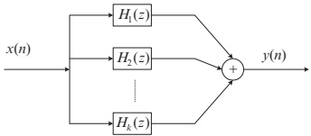
Example 6.13 – Given Second‑Order \(H(z)\)
Given:
\[ H(z) = \frac{0.5(1 - z^{-2})}{1 + 1.3 z^{-1} + 0.36 z^{-2}}. \]
Rewrite numerator:
\[ H(z) = \frac{0.5 - 0.5 z^{-2}}{1 + 1.3 z^{-1} + 0.36 z^{-2}}. \]
Identify coefficients:
- \(a_1 = 1.3\), \(a_2 = 0.36\)
- \(b_0 = 0.5\), \(b_1 = 0\), \(b_2 = -0.5\)
We will realize it in:
- Direct‑Form I and Direct‑Form II.
- Cascade form via first‑order sections.
- Parallel form via first‑order sections.
Example 6.13 – Direct‑Form I
Difference equation (plug coefficients into general form):
\[ \begin{aligned} y(n) &= 0.5 x(n) + 0 \cdot x(n-1) - 0.5 x(n-2) \\ &\quad - 1.3 y(n-1) - 0.36 y(n-2) \\ &= 0.5 x(n) - 0.5 x(n-2) - 1.3 y(n-1) - 0.36 y(n-2). \end{aligned} \]
Direct‑Form I block diagram:
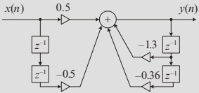
Example 6.13 – Direct‑Form II
Recall Direct‑Form II equations:
Internal state: \[ w(n) = x(n) - 1.3 w(n-1) - 0.36 w(n-2) \]
Output: \[ y(n) = 0.5 w(n) + 0 \cdot w(n-1) - 0.5 w(n-2) = 0.5 w(n) - 0.5 w(n-2). \]
Direct‑Form II structure:
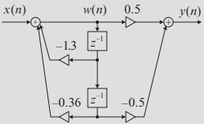
Example 6.13 – Cascade via First‑Order Sections
Factor \(H(z)\) into two first‑order sections:
\[ \begin{aligned} H(z) &= \frac{0.5(1 - z^{-2})}{1 + 1.3 z^{-1} + 0.36 z^{-2}} \\ &= \frac{0.5 - 0.5 z^{-1}}{1 + 0.4 z^{-1}} \cdot \frac{1 + z^{-1}}{1 + 0.9 z^{-1}} \\ &= H_1(z) \cdot H_2(z), \end{aligned} \]
with one possible choice:
- \(H_1(z) = \dfrac{0.5 - 0.5 z^{-1}}{1 + 0.4 z^{-1}}\)
- \(H_2(z) = \dfrac{1 + z^{-1}}{1 + 0.9 z^{-1}}\)
(Other factorizations are possible; this is not unique.)
Cascade structure using Direct‑Form II in each section:
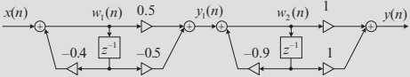
Example 6.13 – Cascade Difference Equations
Let \(x(n)\) → Section 1 → intermediate \(y_1(n)\) → Section 2 → final \(y(n)\).
Section 1 (\(H_1(z)\)):
\[ \begin{aligned} w_1(n) &= x(n) - 0.4 w_1(n-1) \\ y_1(n) &= 0.5 w_1(n) - 0.5 w_1(n-1) \end{aligned} \]
Section 2 (\(H_2(z)\)):
\[ \begin{aligned} w_2(n) &= y_1(n) - 0.9 w_2(n-1) \\ y(n) &= w_2(n) + w_2(n-1) \end{aligned} \]
Example 6.13 – Parallel via First‑Order Sections
Use partial fraction expansion. Start by writing:
\[ \frac{H(z)}{z} = \frac{0.5(z^2 - 1)}{z(z + 0.4)(z + 0.9)} = \frac{A}{z} + \frac{B}{z + 0.4} + \frac{C}{z + 0.9}. \]
Solving for \(A, B, C\) (as in the text):
- \(A = -1.39\)
- \(B = 2.1\)
- \(C = -0.21\)
So:
\[ \begin{aligned} H(z) &= -1.39 + \frac{2.1 z}{z + 0.4} - \frac{0.21 z}{z + 0.9} \\ &= -1.39 + \frac{2.1}{1 + 0.4 z^{-1}} + \frac{-0.21}{1 + 0.9 z^{-1}}. \end{aligned} \]
Parallel structure: three sections in parallel, summed at the output.
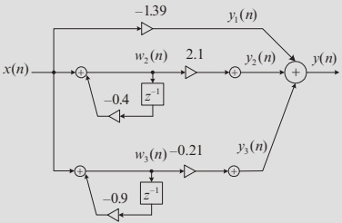
Example 6.13 – Parallel Difference Equations
Three parallel paths:
Constant‑gain path: \[ y_1(n) = -1.39\, x(n) \]
First IIR path: \[ \begin{aligned} w_2(n) &= x(n) - 0.4 w_2(n-1) \\ y_2(n) &= 2.1\, w_2(n) \end{aligned} \]
Second IIR path: \[ \begin{aligned} w_3(n) &= x(n) - 0.9 w_3(n-1) \\ y_3(n) &= -0.21\, w_3(n) \end{aligned} \]
Total output:
\[ y(n) = y_1(n) + y_2(n) + y_3(n). \]
6.7 Applications – Why These Filters Matter
We now apply these concepts to real‑world signals:
- Preemphasis of speech – simple highpass FIR to boost high frequencies.
- Bandpass filtering of speech – IIR bandpass filter for a narrow formant region.
- ECG enhancement with notch filtering – IIR bandstop filter to remove 60 Hz power‑line interference.
Think in terms of:
- What is the signal of interest?
- What is the unwanted component (noise, interference)?
- How do we choose filter type and specs to separate them?
6.7.1 Speech Preemphasis – Motivation
Speech spectra typically have more energy at low frequencies and less at high frequencies.
In some applications (e.g., speech coding, recognition):
- Important phonetic information exists at higher frequencies.
- We don’t want encoder/feature extractor to overlook that content.
Solution:
Preemphasis filter – roughly a highpass filter that boosts high frequencies and slightly attenuates low ones.
Simple digital preemphasis filter:
\[ y(n) = x(n) - \alpha x(n-1), \quad 0 < \alpha < 1. \]
Transfer function:
\[ H(z) = 1 - \alpha z^{-1}. \]
- One zero at \(z = \alpha\) (inside unit circle, close to DC).
- Magnitude increases with frequency → highpass behavior.
Preemphasis Filter – Frequency Response & Effect
For \(\alpha = 0.9\), \(f_s = 8000\) Hz:
- Use
freqz([1 -alpha], 1, 512, fs)to plot frequency response.
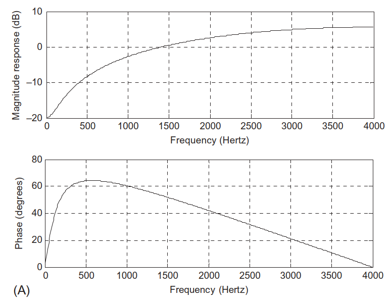
Effect on speech waveform:
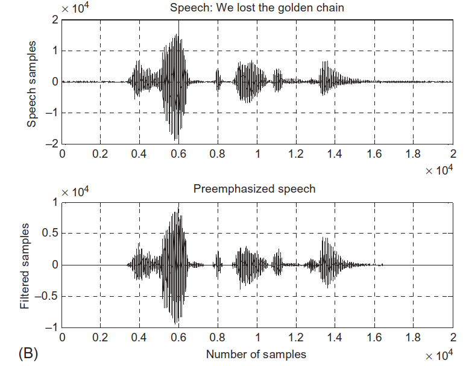
Spectra comparison (FFT + Hamming window):
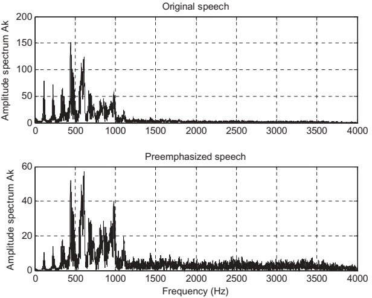
Observation:
- High‑frequency components are boosted.
- Low‑frequency components are relatively attenuated.
MATLAB Program 6.3 – Preemphasis Implementation
% Program 6.3: Preemphasis of speech
close all; clear all
fs = 8000; % Sampling rate
alpha = 0.9; % Degree of pre-emphasis
% Frequency response
figure(1);
freqz([1 -alpha], 1, 512, fs);
% Load speech signal
load speech.dat % Vector 'speech'
% Apply preemphasis filter
y = filter([1 -alpha], 1, speech);
% Time-domain plots
figure(2);
subplot(2,1,1); plot(speech); grid;
ylabel('Speech samples');
title('Original speech');
subplot(2,1,2); plot(y); grid;
ylabel('Filtered samples');
xlabel('Sample index');
title('Preemphasized speech');
% Spectral analysis
figure(3);
N = length(speech);
Axk = abs(fft(speech .* hamming(N))) / N;
Ayk = abs(fft(y .* hamming(N))) / N;
f = (0:N/2)*fs/N;
Axk(2:N) = 2*Axk(2:N);
Ayk(2:N) = 2*Ayk(2:N);
subplot(2,1,1); plot(f, Axk(1:N/2+1)); grid;
ylabel('Amplitude spectrum');
title('Original speech');
subplot(2,1,2); plot(f, Ayk(1:N/2+1)); grid;
ylabel('Amplitude spectrum');
xlabel('Frequency (Hz)');
title('Preemphasized speech');6.7.2 Bandpass Filtering of Speech – Setup
Goal: isolate a narrow band of speech frequencies for analysis or feature extraction.
Given a 4th‑order digital Bandpass Butterworth filter:
- Sampling rate: \(f_s = 8000\) Hz.
- Lower cutoff: 1000 Hz.
- Upper cutoff: 1400 Hz.
- Bandwidth: 400 Hz.
Transfer function:
\[ H(z) = \frac{0.0201 - 0.0402 z^{-2} + 0.0201 z^{-4}}{1 - 2.1192 z^{-1} + 2.6952 z^{-2} - 1.6924 z^{-3} + 0.6414 z^{-4}}. \]
Difference equation:
\[ \begin{aligned} y(n) &= 0.0201 x(n) - 0.0402 x(n-2) + 0.0201 x(n-4) \\ &\quad + 2.1192 y(n-1) - 2.6952 y(n-2) \\ &\quad + 1.6924 y(n-3) - 0.6414 y(n-4). \end{aligned} \]
Bandpass Filter – Frequency Response and Effect
Frequency response via freqz:
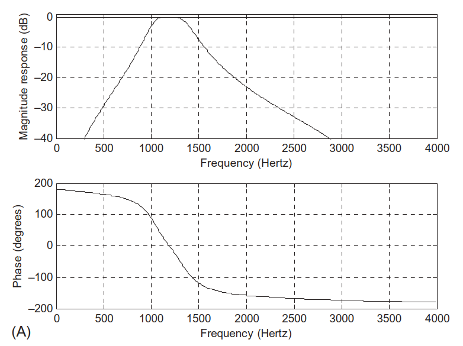
Time‑domain speech before and after filtering:
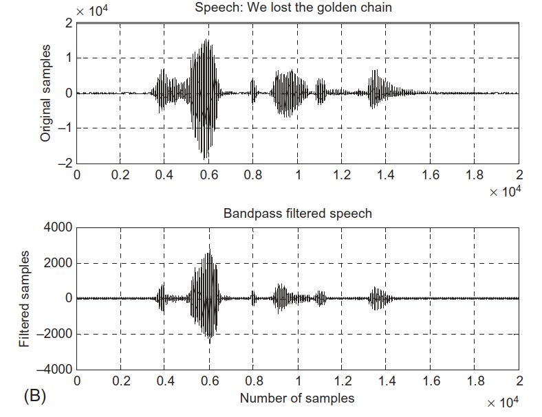
Spectra comparison:
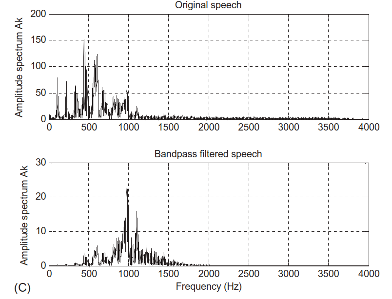
Observation:
- Frequencies below 1000 Hz and above 1400 Hz are significantly attenuated.
- Passband 1000–1400 Hz remains.
MATLAB Program 6.4 – Bandpass Filter Implementation
% Program 6.4: Bandpass filtering of speech
fs = 8000; % Sampling rate
% Bandpass filter coefficients (4th-order)
B = [0.0201 0 -0.0402 0 0.0201];
A = [1 -2.1192 2.6952 -1.6924 0.6414];
% Frequency response
figure(1);
freqz(B, A, 512, fs);
axis([0 fs/2 -40 1]); % Adjust axis if needed
% Load speech
load speech.dat
% Filter speech
y = filter(B, A, speech);
% Time-domain plots
figure(2);
subplot(2,1,1); plot(speech); grid;
ylabel('Original Samples');
title('Original speech');
subplot(2,1,2); plot(y); grid;
xlabel('Sample index'); ylabel('Filtered Samples');
title('Bandpass filtered speech.');
% Spectral analysis
figure(3);
N = length(speech);
Axk = abs(fft(speech .* hamming(N)))/N;
Ayk = abs(fft(y .* hamming(N)))/N;
f = (0:N/2)*fs/N;
Axk(2:N) = 2*Axk(2:N);
Ayk(2:N) = 2*Ayk(2:N);
subplot(2,1,1); plot(f, Axk(1:N/2+1)); grid;
ylabel('Amplitude spectrum');
title('Original speech');
subplot(2,1,2); plot(f, Ayk(1:N/2+1)); grid;
ylabel('Amplitude spectrum');
xlabel('Frequency (Hz)');
title('Bandpass filtered speech');6.7.3 ECG Enhancement with Notch Filter
Problem: ECG signal contaminated by 60 Hz power‑line interference during acquisition.
Given:
- Sampling frequency: \(f_s = 500\) Hz.
- Target: Notch at 60 Hz.
Designed second‑order notch filter:
\[ H(z) = \frac{1 - 1.4579 z^{-1} + z^{-2}}{1 - 1.3850 z^{-1} + 0.9025 z^{-2}}. \]
Difference equation:
\[ y(n) = x(n) - 1.4579 x(n-1) + x(n-2) + 1.3850 y(n-1) - 0.9025 y(n-2). \]
Frequency response:
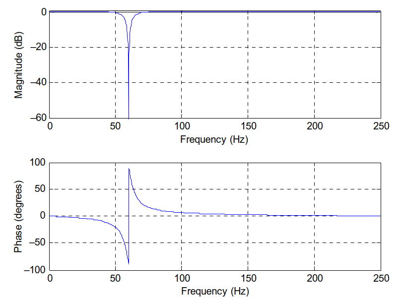
ECG Before and After Notch Filtering
Time‑domain ECG:
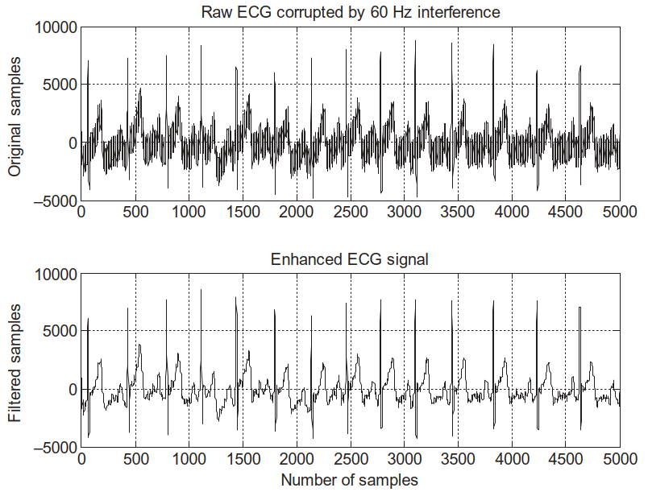
- Upper plot: ECG + 60 Hz interference.
- Lower plot: Filtered ECG with notch filter applied.
Frequency‑domain view:
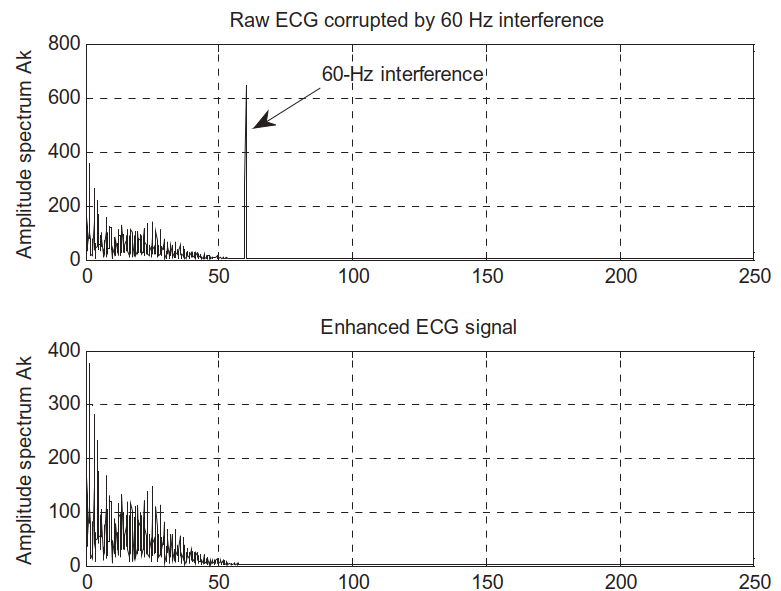
- Clear peak at 60 Hz in corrupted signal.
- Peak eliminated in enhanced signal; baseline ECG spectrum preserved.
Important
This is a classic and practical example of DSP in biomedical engineering: a simple, well‑designed digital notch filter significantly improves diagnostic signal quality.
Summary / Key Points
- Four basic digital filter types:
- Lowpass – passes low frequencies, attenuates high.
- Highpass – passes high, attenuates low.
- Bandpass – passes a band, attenuates outside.
- Bandstop / Notch – attenuates a band, passes outside.
- Filter specs defined by:
- Passband / stopband edges (\(\Omega_p\), \(\Omega_s\), etc.).
- Passband ripple \(\delta_p\), stopband ripple \(\delta_s\).
freqz(B, A, N)computes complex frequency response of \(H(z) = B(z)/A(z)\).
- Realizations of IIR filters:
- Direct‑Form I – two parallel paths (input and output delays).
- Direct‑Form II – minimal delays via shared internal state.
- Cascade – product of first/second‑order sections (common for high orders).
- Parallel – sum of elementary sections via partial fraction expansion.
- Real ECE applications:
- Preemphasis of speech – simple highpass FIR filter \(H(z) = 1 - \alpha z^{-1}\).
- Bandpass speech filter – 4th‑order IIR to isolate 1000–1400 Hz band.
- ECG enhancement – narrow notch at 60 Hz to remove power‑line interference.
Key Formulas Summary
General IIR transfer function:
\[ H(z) = \frac{B(z)}{A(z)} = \frac{b_0 + b_1 z^{-1} + \dots + b_M z^{-M}}{1 + a_1 z^{-1} + \dots + a_N z^{-N}}. \]
Input–output relation (Direct‑Form I):
\[ \begin{aligned} y(n) &= b_0 x(n) + b_1 x(n-1) + \dots + b_M x(n-M) \\ &\quad - a_1 y(n-1) - \dots - a_N y(n-N). \end{aligned} \]
Direct‑Form II internal state and output:
\[ w(n) = x(n) - a_1 w(n-1) - \dots - a_M w(n-M) \]
\[ y(n) = b_0 w(n) + b_1 w(n-1) + \dots + b_M w(n-M) \]
Preemphasis filter:
\[ y(n) = x(n) - \alpha x(n-1), \quad H(z) = 1 - \alpha z^{-1}. \]
Example bandpass IIR difference equation:
\[ \begin{aligned} y(n) &= 0.0201 x(n) - 0.0402 x(n-2) + 0.0201 x(n-4) \\ &\quad + 2.1192 y(n-1) - 2.6952 y(n-2) \\ &\quad + 1.6924 y(n-3) - 0.6414 y(n-4). \end{aligned} \]
Example ECG notch filter:
\[ H(z) = \frac{1 - 1.4579 z^{-1} + z^{-2}}{1 - 1.3850 z^{-1} + 0.9025 z^{-2}} \]
\[ y(n) = x(n) - 1.4579 x(n-1) + x(n-2) + 1.3850 y(n-1) - 0.9025 y(n-2). \]
Quick Interactive Check
Suppose you see a magnitude response that is nearly 1 from 0 to \(0.3\pi\), then drops to nearly 0 after \(0.4\pi\). What filter type is this?
You are given a speech signal sampled at 8 kHz and want to remove low‑frequency background hum below 200 Hz. What basic filter type would you design?
In an ECG system, you see strong narrowband interference at 50 Hz with \(f_s = 500\) Hz. What kind of filter and approximate normalized notch frequency would you choose?
Interactive Deck
Reminder: freqz vs Direct Computation
In MATLAB we used freqz(B, A, N) to get the frequency response. Here, we’ll do the equivalent in Python using scipy.signal.freqz‑style logic.
We’ll:
- Define numerator
Band denominatorA. - Evaluate \(H(e^{j\Omega})\) at many points on the unit circle.
- Plot magnitude and phase.
Interactive: Basic Frequency Response Explorer
Experiment with a simple IIR filter (like Example 6.12).
Try:
B = [1.0],A = [1.0, -0.5](Example 6.12(a): lowpass).B = [1.0, -0.5],A = [1.0](Example 6.12(b): highpass).
Reactive: Identify Filter Type from Coefficients
Use sliders to set a simple 2‑tap FIR filter: \(H(z) = b_0 + b_1 z^{-1}\). Observe the magnitude response and guess: lowpass or highpass?
Try:
- \(b_0 = 1\), \(b_1 = -0.9\) → highpass / preemphasis‑like.
- \(b_0 = 0.5\), \(b_1 = 0.5\) → lowpass (moving average of length 2).
Interactive: From Difference Equation to Code (Direct‑Form I)
Given the general IIR difference equation:
\[ y(n) = \sum_{k=0}^{M} b_k x(n-k) - \sum_{k=1}^{N} a_k y(n-k). \]
Let’s implement this manually and compare with the vector form.
Try:
- Change
xto a step input (x[n] = 1for all n). - Observe how the output responds and stabilizes (or not).
Reactive: Direct‑Form II State Evolution
We now implement the Direct‑Form II state update equations with interactive coefficients.
For a second‑order IIR with \(M=2\):
\[ \begin{aligned} w(n) &= x(n) - a_1 w(n-1) - a_2 w(n-2) \\ y(n) &= b_0 w(n) + b_1 w(n-1) + b_2 w(n-2). \end{aligned} \]
viewof a1 = Inputs.range([-2, 2], {step: 0.1, label: "a1 (feedback 1)"})
viewof a2 = Inputs.range([-2, 2], {step: 0.1, label: "a2 (feedback 2)"})
viewof b0_df2 = Inputs.range([-1, 1], {step: 0.1, label: "b0 (feedforward 0)"})
viewof b1_df2 = Inputs.range([-1, 1], {step: 0.1, label: "b1 (feedforward 1)"})
viewof b2_df2 = Inputs.range([-1, 1], {step: 0.1, label: "b2 (feedforward 2)"})Try to make the filter unstable by choosing \(a_1, a_2\) so that poles move outside the unit circle (e.g., magnitudes > 1). Observe the impulse response growing without bound.
Interactive: Pole–Zero Plot for Example 6.12
Let’s approximate a pole–zero plot for one of the Example 6.12 filters.
Try replacing B and A with other examples ((a), (b), or (d)) and see how poles and zeros move.
Reactive: Preemphasis Filter \(H(z) = 1 - \alpha z^{-1}\)
Recall:
- Preemphasis for speech: \(y(n) = x(n) - \alpha x(n-1)\), \(0 < \alpha < 1\).
- \(H(z) = 1 - \alpha z^{-1}\) is a simple highpass filter.
Use the slider to change \(\alpha\) and observe the magnitude response.
Observe: as \(\alpha\) → 1, the low‑frequency attenuation increases and high‑frequency boost increases.
Interactive: Time‑Domain Preemphasis on Synthetic Signal
Apply preemphasis to a simple synthetic “speech‑like” signal: mixture of low and high frequencies.
Try increasing the amplitude of the high‑frequency component in x and observe how preemphasis modifies the signal.
Reactive: Bandpass Filter – Shape Control
We’ll create a simple FIR bandpass by subtracting a lowpass response from a highpass response. To keep it simple, use two moving-average filters and explore the transition region.
Change L1 and L2 to see how the passband region and transition widths change.
Reactive: Notch Filter at Variable Frequency
Design a simple second‑order notch:
\[ H(z) = \frac{1 - 2r\cos\Omega_0 z^{-1} + r^2 z^{-2}}{1 - 2\cos\Omega_0 z^{-1} + z^{-2}}, \]
where \(\Omega_0\) is the notch frequency and \(0 < r < 1\) controls the width.
Try:
- Set
f0 = 60Hz,r ≈ 0.95(similar to ECG example). - Move
f0around and watch the notch move along the frequency axis.
Interactive: Apply Notch Filter to Synthetic ECG + Noise
Create a synthetic ECG‑like waveform (simplified) plus a sinusoidal interference at f0.
Observe how the oscillatory 60 Hz component is suppressed while the slower ECG‑like shape remains.
Try This: Design Your Own Filter
- Pick a filter type (lowpass, highpass, bandpass, bandstop).
- Define a simple FIR or low‑order IIR using the code templates above.
- Plot its magnitude response.
- Apply it to a synthetic signal (e.g., sum of sinusoids).
Think about:
- Where are the passband and stopband?
- Is the filter stable?
- How many taps or what order does it have?
Use any of the Pyodide cells above as a starting point and modify coefficients, input signals, or sampling rates.